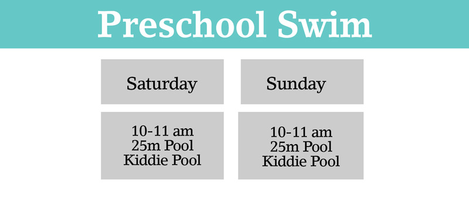
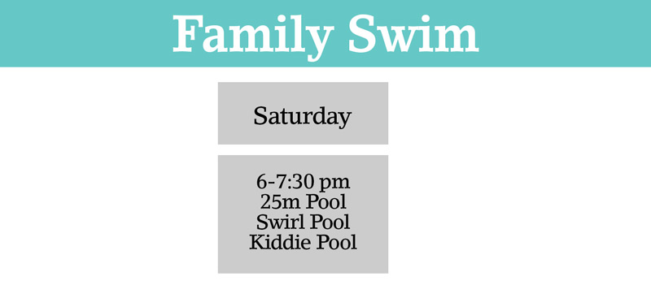
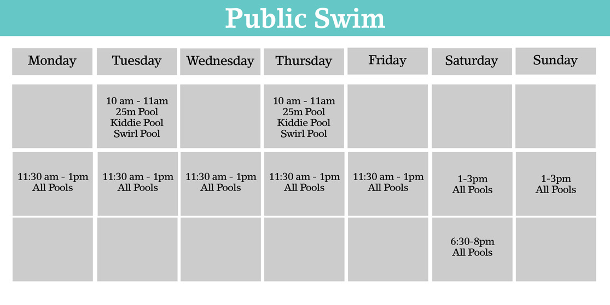

Come and enjoy our modern pool facility, we are open all year-round!!!
To fit the need of our clients/swimmers, we divided our sessions into the following categories:
- Pre-school Swim: An open swim time with limited pool space to allow playtime for preschool aged children and their parents; ages five and under. 
- Family Swim: Open swim time for kids and youth who are supervised by a parent/guardian, who should be in the water at all times. Individual adults are welcome. 
- Public Swim: Open to all ages. Children 16 years of age or younger should be supervised by a parent/guardian who should be in the water at all times 
- Lane Swim: Quiet lap swimming for youth, adults and seniors. Sessions have been divided into Swirl Pool and Shallow Pool depending on the needs of the swimmer.